{{ m.initial }}
{{ m.band }}
{{ m.overlapText }}
{{ m.tier }}{{ m.bd }}

MangoLabs SIGNAL MAP这里列的不是要接单的 KOL，而是你想影响的人。点开任一名字，可以看到他是谁、以及名单里谁能连接到他。这一轮如果有特别想先进入的一类，标记为重点即可——名单只重排，不会变少。
{{ c.who }}
{{ c.pick }}
{{ conclusion }}
{{ listNote }}
{{ m.reason }}
{{ understanding }}
我们会复核报价、档期与合作条件，并把可执行方案发回给你。随时回到本页调整。
{{ demoNote }}
{{ m.body }}
连接记录说明的是内容进入某人信息流的可能路径，不代表任何目标人物一定会看到、回复或转发。所有报价以 Mango 复核为准。
{{ demoNote }}
目标人物用于表达你希望影响谁；连接记录是公开可观察的关注与互动，不代表对方一定会看到或转发。